%matplotlib inline
import numpy as np
import matplotlib.pyplot as plt
import statsmodels.api as sm
from scipy.stats import norm, multivariate_normal
from ipywidgets import interact # widget manipulation
import seaborn as sns
import pandas as pd
from mpl_toolkits.mplot3d import Axes3D # pour activer la 3DHLMA 408: Lois gaussiennes et visualisation interactive
Auteur: Joseph Salmon joseph.salmon@umontpellier.fr
sns.set_context("paper", font_scale=1)
sns.set_style("ticks")
sns.set_palette("colorblind")Attention : décommenter la partie LaTeX ci-dessous, si vous n’avez pas LaTeX sur votre système
Eleve = False # à changer en True pour un étudiant
title_font = {'size': '16'}
axis_font = {'size': '14'}
if not Eleve:
from matplotlib import rc
rc('text', usetex=True)
font = {'family': 'sans-serif'}
rc('font', **font)
saving = True
from download import download
else:
saving = Falsedirname = "../prebuiltimages/"
imageformat = ".pdf"# %pip install download
# si download n'est pas installé décommenter la ligne du dessus, ou télécharger le fichier à la main
from download import download
path_target = "./utils.py"
url_shared_files = "http://josephsalmon.eu/enseignement/Montpellier/HLMA408/sharedcode/utils.py"
download(url_shared_files, path_target, replace=False)
from utils import my_saving_displayReplace is False and data exists, so doing nothing. Use replace=True to re-download the data.Visualisation des densités gaussiennes: impact des paramètres de centrage (\mu) et de dispersion (\sigma)
x = np.linspace(-5, 5, num=400)def gaussian_mean_and_std(mean=0, std=1):
"""Visualize the Gaussian quantile"""
fig, ax1 = plt.subplots(1, 1, figsize=(6, 4))
ax1.plot(x, norm.pdf(x, mean, std), '-', lw=2,
label=r"$\varphi_{\mu, \sigma}$")
ax1.set_ylim(0, 1)
ax1.set_title(r"Densité d'une loi gaussienne en fonction des paramètres:" + "\n" +
r" Centrage $\mu = {0:.2f}$, Dispersion: $\sigma = {1:.2f}$".format(mean, std), **title_font)
plt.legend()
plt.show()interact(gaussian_mean_and_std, mean=(-3., 3., 0.01), std=(0.1, 4, 0.05))<function __main__.gaussian_mean_and_std(mean=0, std=1)>Visualisation de la fonction de répartition gaussienne
val = 1
fig, ax1 = plt.subplots(1, 1, figsize=(6, 4))
ax1.plot(x, norm.pdf(x, 0, 1), '-', lw=2, label=r"$\varphi$")
ax1.set_ylim(0, 0.5)
ax1.fill_between(x, 0, norm.pdf(x, 0, 1), where=x <= val, alpha=0.25)
plt.axvline(x=val, c='k', ls="--", lw=2)
ax1.text(0.45, 0.25, r'$\Phi(z)$', transform=ax1.transAxes, fontsize=19)
ax1.text(0.60, -0.12, r'$z$', transform=ax1.transAxes, fontsize=19)
plt.legend(prop={'size': 16})
plt.show()
my_saving_display(fig, dirname, "Gaussian_CDF",
imageformat, saving=saving)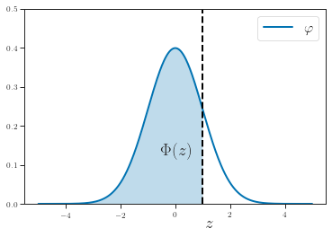
Visualisation des quantiles gaussiens
def gaussian_quantile(alpha=0.9, saving=False):
"""Visualisation des quantiles gaussiens."""
val = norm.ppf(alpha, 0, 1)
fig, ax1 = plt.subplots(1, 1, figsize=(6, 4))
ax1.plot(x, norm.pdf(x, 0, 1), '-', lw=2, label=r"$\varphi$")
ax1.set_ylim(0, 0.5)
ax1.fill_between(x, 0, norm.pdf(x, 0, 1), where=x <= val, alpha=0.25)
plt.axvline(x=val, c='k', ls="--", lw=2)
ax1.set_title(r"Visualisation des quantiles:" + "\n" +
r"Aire $ \alpha = {0:.2f},$ seuil = $\Phi^{{-1}}(\alpha)={1:.2f}$".format(alpha, val), **title_font)
plt.legend(prop={'size': 16})
plt.show()
my_saving_display(fig, dirname, "VisGaussianCDF_bis",
imageformat, saving=saving)gaussian_quantile(alpha=norm.cdf(0.82, 0, 1), saving=True)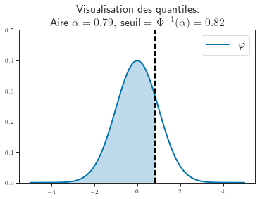
interact(gaussian_quantile, alpha=(0.01, .99, 0.01))<function __main__.gaussian_quantile(alpha=0.9, saving=False)>Figures pour les slides du cours
x = np.linspace(-5, 5, 300)
fig, ax1 = plt.subplots(1, 1)
ax1.plot(x, norm.pdf(x, 0, 1), '-', lw=2, label=r"$\varphi$")
ax1.set_ylim(0, 0.5)
ax1.fill_between(x, 0, norm.pdf(x, 0, 1), where=x <= 0, alpha=0.25)
plt.axvline(x=0, c='k', ls="--", lw=2)
plt.title("$\Phi(0)=1/2$", **title_font)
plt.legend(prop={'size': 16})
my_saving_display(fig, dirname, "Gaussian_phi0", imageformat, saving=saving)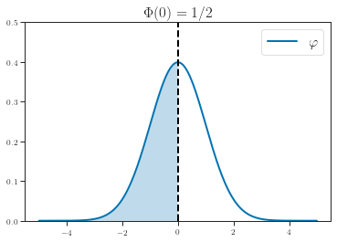
x = np.linspace(-5, 5, 300)
lim = 1
fig, ax1 = plt.subplots(1, 1)
ax1.plot(x, norm.pdf(x, 0, 1), '-', lw=2, label=r"$\varphi$")
ax1.set_ylim(0, 0.5)
ax1.fill_between(x, 0, norm.pdf(x, 0, 1), where=x <= -
lim, color=sns.color_palette()[0], alpha=0.25)
ax1.fill_between(x, 0, norm.pdf(x, 0, 1), where=x >=
lim, color=sns.color_palette()[0], alpha=0.25)
plt.title("$\Phi(-x)=1-\Phi(x)$", **title_font)
plt.legend(prop={'size': 16})
my_saving_display(fig, dirname, "Gaussian_phi_moins_x",
imageformat, saving=saving)
norm.cdf(1, 0, 1)-norm.cdf(-1, 0, 1)0.68268949213708592 * norm.cdf(1, 0, 1)-10.68268949213708592 * norm.cdf(2, 0, 1)-10.9544997361036416Histogramme et densité gaussienne : théorème de la limite centrale et données réelles
url = "http://josephsalmon.eu/enseignement/datasets/babies23.data"
# url = "http://www.stat.berkeley.edu/users/statlabs/data/babies23.data" # backup url, without header.
path_target = "./babies23.data"
download(url, path_target, replace=False)Replace is False and data exists, so doing nothing. Use replace=True to re-download the data.'./babies23.data'# Le fichier peut être téléchargé ici:
# http://josephsalmon.eu/enseignement/datasets/babies23.data
# et mis dans le répertoire de votre notebook
pd.set_option('precision', 3) # set to display number at precision 0 in pandas
df_babies = pd.read_csv("babies23.data", skiprows=38,
sep='\s+') # \s+ : for hanlding spaces
df_babies.head(n=10) # df stands for Data Frame| id | pluralty | outcome | date | gestation | sex | wt | parity | race | age | ... | drace | dage | ded | dht | dwt | marital | inc | smoke | time | number | |
|---|---|---|---|---|---|---|---|---|---|---|---|---|---|---|---|---|---|---|---|---|---|
| 0 | 15 | 5 | 1 | 1411 | 284 | 1 | 120 | 1 | 8 | 27 | ... | 8 | 31 | 5 | 65 | 110 | 1 | 1 | 0 | 0 | 0 |
| 1 | 20 | 5 | 1 | 1499 | 282 | 1 | 113 | 2 | 0 | 33 | ... | 0 | 38 | 5 | 70 | 148 | 1 | 4 | 0 | 0 | 0 |
| 2 | 58 | 5 | 1 | 1576 | 279 | 1 | 128 | 1 | 0 | 28 | ... | 5 | 32 | 1 | 99 | 999 | 1 | 2 | 1 | 1 | 1 |
| 3 | 61 | 5 | 1 | 1504 | 999 | 1 | 123 | 2 | 0 | 36 | ... | 3 | 43 | 4 | 68 | 197 | 1 | 8 | 3 | 5 | 5 |
| 4 | 72 | 5 | 1 | 1425 | 282 | 1 | 108 | 1 | 0 | 23 | ... | 0 | 24 | 5 | 99 | 999 | 1 | 1 | 1 | 1 | 5 |
| 5 | 100 | 5 | 1 | 1673 | 286 | 1 | 136 | 4 | 0 | 25 | ... | 3 | 28 | 2 | 64 | 130 | 1 | 4 | 2 | 2 | 2 |
| 6 | 102 | 5 | 1 | 1449 | 244 | 1 | 138 | 4 | 7 | 33 | ... | 7 | 37 | 4 | 99 | 999 | 1 | 98 | 0 | 0 | 0 |
| 7 | 129 | 5 | 1 | 1562 | 245 | 1 | 132 | 2 | 7 | 23 | ... | 7 | 23 | 4 | 71 | 192 | 1 | 2 | 0 | 0 | 0 |
| 8 | 142 | 5 | 1 | 1408 | 289 | 1 | 120 | 3 | 0 | 25 | ... | 3 | 26 | 1 | 70 | 180 | 0 | 2 | 0 | 0 | 0 |
| 9 | 148 | 5 | 1 | 1568 | 299 | 1 | 143 | 3 | 0 | 30 | ... | 0 | 34 | 5 | 99 | 999 | 1 | 2 | 1 | 1 | 4 |
10 rows × 23 columns
is_preprocessing_done = 0 # init at 0,if greater don't redo itif is_preprocessing_done < 1:
print("You have to do the pre-processing only once, to avoid unit issues")
# Gérer les valeurs manquantes (voir entête de babies23.data pour les détails)
# Unknown gestation duration
df_babies['gestation'].replace(999, np.nan, inplace=True)
# Unknown smoking status of the mother
df_babies['smoke'].replace(9, np.nan, inplace=True)
# Mother's height
df_babies['ht'].replace(99, np.nan, inplace=True)
# Father's height
df_babies['dht'].replace(99, np.nan, inplace=True)
# Father's weight
df_babies['dwt'].replace(999, np.nan, inplace=True)
# Mother's weight
df_babies['wt.1'].replace(999, np.nan, inplace=True)
# Baby's weight
df_babies['wt'].replace(999, np.nan, inplace=True)
# Tabaco consumption
df_babies['number'].replace(9, np.nan, inplace=True)
df_babies['number'].replace(98, np.nan, inplace=True)
df_babies['number'].replace(99, np.nan, inplace=True)
# Remove all missing values
df_babies.dropna(inplace=True)
# US researchers use stupid non international units...
df_babies['wt'] = df_babies['wt'] * 0.0283495 # onces -> kg
df_babies['wt.1'] = df_babies['wt.1'] * 0.453592 # pounds -> kg
df_babies['dwt'] = df_babies['dwt'] * 0.453592 # pounds -> kg
df_babies['ht'] = df_babies['ht'] * 2.54 # inches -> cm
df_babies['dht'] = df_babies['dht'] * 2.54 # inches -> cm
# Tabaco consumption: change irrelevant numbers by relevant numbers
df_babies['number'].replace(1, 2.5, inplace=True)
df_babies['number'].replace(3, 12, inplace=True)
df_babies['number'].replace(4, 17, inplace=True)
df_babies['number'].replace(5, 24.5, inplace=True)
df_babies['number'].replace(6, 34.5, inplace=True)
df_babies['number'].replace(7, 50, inplace=True)
df_babies['number'].replace(8, 70, inplace=True)
df_babies['number'].replace(2, 7, inplace=True)
print("This is done only because {} < 1".format(is_preprocessing_done))
is_preprocessing_done += 1You have to do the pre-processing only once, to avoid unit issues
This is done only because 0 < 1mean = np.mean(df_babies['ht'])
sd = np.std(df_babies['ht'])
print("Moyenne={0} (cm) et écart-type={1} (cm)".format(mean, sd))Moyenne=162.71715107913673 (cm) et écart-type=6.4288819931782255 (cm)mean162.71715107913673fig_hist_height, axs = plt.subplots(1, 1, figsize=(6, 4))
plt.hist((df_babies['ht'] - np.mean(df_babies['ht']))/sd,
density=True, bins=19, alpha=0.25) # standardisation
x = np.linspace(-4, 4, 100)
plt.xlabel('Taille de la mère standardisée', **axis_font)
plt.ylabel('Densité', **axis_font)
plt.title("Histogramme de la taille des mères", **title_font)
axs.set_xlim(-4, 4)
plt.plot(x, norm.pdf(x, 0, 1), 'k-', lw=3)
my_saving_display(fig_hist_height, dirname,
"hist_n_gauss_height_mother", imageformat, saving=saving)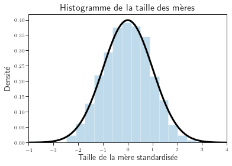
EXERCICE : Histogramme vs. KDE.
Compare l’impact des deux representations. En particulier, discuter les problèmes des histogrammes avec la discrétisation.
# XXX todo def kde_explore(bw=2):
fig, ax = plt.subplots(1, 1, figsize=(10, 5))
# KDE = Kernel Density Estimate
ax = sns.kdeplot(df_babies['ht'], bw_method=bw, shade=True)
plt.xlabel('Taille de la mère (en cm)', **axis_font)
plt.ylabel('Proportion', **axis_font)
plt.title("Densité de la taille des mères", **title_font)
# ax.get_legend().remove()
ax.set_xlim(130, 200)
ax.set_ylim(0, 0.08)# Changer la valeur du curseur pour faire varier la fenêtre de lissage (en: bandwidth)
interact(kde_explore, bw=(0.001, 5, 0.1))<function __main__.kde_explore(bw=2)>def hist_explore(n_bins=24):
fig, ax = plt.subplots(1, 1, figsize=(10, 5))
ax.hist(df_babies['ht'], density=True,
bins=n_bins, alpha=0.25) # standardization
plt.xlabel('Taille de la mère (en cm)', **axis_font)
plt.ylabel('Proportion', **axis_font)
plt.title("Densité de la taille des mères", **title_font)
ax.set_xlim(130, 200)
ax.set_ylim(0, 0.11)# Changer la valeur du curseur pour faire varier le nombre de boîtes (en: bins)
interact(hist_explore, n_bins=(1, 30, 1))<function __main__.hist_explore(n_bins=24)>Inspection des valeurs de la série:
np.sort(df_babies['ht'].unique())array([137.16, 147.32, 149.86, 152.4 , 154.94, 157.48, 160.02, 162.56,
165.1 , 167.64, 170.18, 172.72, 175.26, 177.8 , 180.34, 182.88])np.diff(np.sort(df_babies['ht'].unique())) array([10.16, 2.54, 2.54, 2.54, 2.54, 2.54, 2.54, 2.54, 2.54,
2.54, 2.54, 2.54, 2.54, 2.54, 2.54])C’est l’effet de la discretisation: les américains ont noté les tailles de 2.54 cm en 2.54cm (unité?)
Gaussiennes 2D
def covmat_to_scalar(sigma):
"""Convert covariance matrix to scalars."""
sigmax = np.sqrt(sigma[0, 0])
sigmay = np.sqrt(sigma[1, 1])
sigmaxy = sigma[1, 0]
return sigmax, sigmay, sigmaxy
def angle_scalar_to_covmat(theta, sig1, sig2):
"""Inverse function of the previous one."""
rotation = np.zeros((2, 2))
rotation[0, 0] = np.cos(theta)
rotation[1, 0] = np.sin(theta)
rotation[0, 1] = -np.sin(theta)
rotation[1, 1] = np.cos(theta)
sigma = rotation.dot(np.diag([sig1 ** 2, sig2 ** 2])).dot(rotation.T)
return sigmastep = 200
mean_1 = [0, 0]
sig1 = np.sqrt(3)
xrange = 10
xx = np.linspace(-xrange, xrange, step)
yy = xx
Xg, Yg = np.meshgrid(xx, yy)Cas isotrope
sig = angle_scalar_to_covmat(0, sig1, sig1)
rv = multivariate_normal([mean_1[0], mean_1[1]], sig)
pos = np.empty(Xg.shape + (2,))
pos[:, :, 0] = Xg
pos[:, :, 1] = Yg
Z2_bis = rv.pdf(pos)
fig1 = plt.figure(dpi=90)
ax = fig1.add_subplot(111, projection='3d')
ax.plot_surface(Xg, Yg, Z2_bis, cmap='Oranges', rstride=3, cstride=3,
alpha=0.95, lw=0.5, edgecolors='k')
ax.set_xticks(np.arange(-xrange, xrange+1, 5))
ax.set_yticks(np.arange(-xrange, xrange+1, 5))
ax.set_zlim(0, 0.06)
plt.show()
my_saving_display(fig1, dirname, "iso_gaussian", imageformat, saving=saving)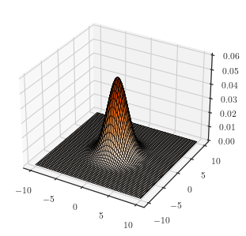
Cas anisotrope
sig1 = 1.
sig2 = 3.
thetas = [0., np.pi / 5., 2. * np.pi / 5., 3. * np.pi / 5., 4. * np.pi / 5.]
for i, theta in enumerate(thetas):
sig = angle_scalar_to_covmat(theta, sig1, sig2)
rv = multivariate_normal([mean_1[0], mean_1[1]], sig)
pos = np.empty(Xg.shape + (2,))
pos[:, :, 0] = Xg
pos[:, :, 1] = Yg
Z2_ter = rv.pdf(pos)
fig1 = plt.figure(dpi=90)
ax = fig1.add_subplot(111, projection='3d')
ax.plot_surface(Xg, Yg, Z2_ter, cmap='Oranges', rstride=3, cstride=3,
alpha=0.95, lw=0.5, edgecolors='k')
ax.set_xticks(np.arange(-xrange, xrange+1, 5))
ax.set_yticks(np.arange(-xrange, xrange+1, 5))
ax.set_zlim(0, 0.06)
plt.show()
my_saving_display(fig1, dirname, "aniso_gaussian" +
str(i), imageformat, saving=saving)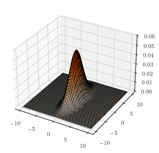
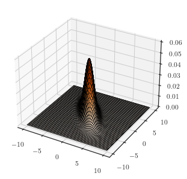
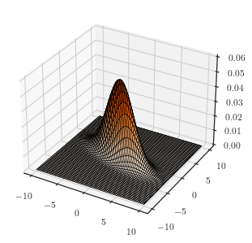
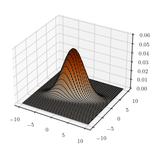
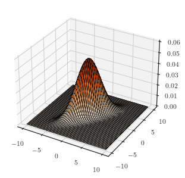
def plot_Gaussian2d(theta=0, sig1=3, sig2=1):
radian = theta / 180.0 * np.pi # convertion en radian
sig = angle_scalar_to_covmat(radian, sig1, sig2)
rv = multivariate_normal([mean_1[0], mean_1[1]], sig)
pos = np.empty(Xg.shape + (2,))
pos[:, :, 0] = Xg
pos[:, :, 1] = Yg
Z2_ter = rv.pdf(pos)
fig1 = plt.figure(dpi=90)
ax = fig1.add_subplot(111, projection='3d')
ax.plot_surface(Xg, Yg, Z2_ter, cmap='Oranges', rstride=3, cstride=3,
alpha=0.95, lw=0.5, edgecolors='k')
ax.set_zlim(0, 0.06)
ax.set_xticks(np.arange(-xrange, xrange+1, 5))
ax.set_yticks(np.arange(-xrange, xrange+1, 5))
plt.show()interact(plot_Gaussian2d, theta=(0, 360, 10),
sig1=(1, 5, 0.5), sig2=(1, 5, 0.5));def plot_Gaussian2d_bis(theta=60, sig1=4, sig2=2):
radian = theta / 180.0 * np.pi # convertion en radian
sig = angle_scalar_to_covmat(radian, sig1, sig2)
rv = multivariate_normal([mean_1[0], mean_1[1]], sig)
pos = np.empty(Xg.shape + (2,))
pos[:, :, 0] = Xg
pos[:, :, 1] = Yg
Z2_ter = rv.pdf(pos)
fig1 = plt.figure(figsize=(17, 7))
ax1 = fig1.add_subplot(121, projection='3d')
ax1.plot_surface(Xg, Yg, Z2_ter, cmap='Oranges', rstride=3, cstride=3,
alpha=0.95, lw=0.5, edgecolors='k')
ax1.set_zlim(0, 0.06)
ax1.set_xticks(np.arange(-xrange, xrange+1, 5))
ax1.set_yticks(np.arange(-xrange, xrange+1, 5))
ax1.set_xlabel(r'$x$', **axis_font)
ax1.set_ylabel(r'$y$', **axis_font)
ax2 = fig1.add_subplot(122)
ax2.set_xticks(np.arange(-xrange, xrange+1, 5))
ax2.set_yticks(np.arange(-xrange, xrange+1, 5))
ax2.contourf(xx, yy, Z2_ter, levels=10, cmap='Oranges')
ax2.contour(xx, yy, Z2_ter, levels=10, linewidths=0.5, colors=['k'])
ax2.set_xlabel(r'$x$', **axis_font)
ax2.set_ylabel(r'$y$', **axis_font)
ax2.set_title('Lignes de niveau de la densité', **title_font)
ax2.set_aspect('equal')
plt.show()Visualisation des densités gaussiennes en dimension 2:
On mesure ici l’impact de la covariance (paramétré par un angle et des dispersions sur les deux axes) sur ces densités.
interact(plot_Gaussian2d_bis, theta=(0, 360, 10),
sig1=(0.5, 5, 0.5), sig2=(0.5, 5, 0.5));Remarque: la figure de droite se lit comme une carte IGN, les lignes de niveau (zone de couleur constante) indiquent les zones d’altitude égale dans la figure de gauche.
Tirages gaussiens: cas 1D
n_samples = 1000
y = np.ones(n_samples,) + 0.08 * np.random.randn(n_samples,)
scales = [1, 3]fig, axs = plt.subplots(len(scales), 1)
for i, ax in enumerate(axs):
X = np.random.normal(loc=0, scale=scales[i], size=n_samples) # std =3
ax.scatter(X, y, s=3, marker='o', lw=1, alpha=0.5)
ax.set_aspect('equal')
ax.set_ylim(0.2, 1.8)
ax.set_xlim(-10, 10)
ax.set_yticks([])
ax.set_xlabel('Espérance = 0, Écart-type={}'.format(scales[i]))
plt.subplots_adjust(hspace = -0.4)
my_saving_display(fig, dirname, "gaussian_sample1D",
imageformat, saving=saving)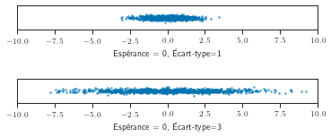
Tirages gaussiens: cas 2D
mu = [0, 0]
Sigma0 = np.array([[3, 2], [2, 2.5]])
Sigmas = [Sigma0 * 2, Sigma0, Sigma0 * 0.5]
Sigmas_names = ['Variance élevée', 'Variance moyenne', 'Variance petite']fig, axs = plt.subplots(1, len(Sigmas))
fig.set_size_inches(10, 3)
fig.suptitle('Tirages gaussiens', fontsize=20)
for i, ax in enumerate(axs):
X = np.random.multivariate_normal(mu, Sigmas[i], n_samples)
ax.scatter(X[:, 0], X[:, 1], s=4, alpha=0.5)
ax.set_aspect('equal')
ax.set_title(Sigmas_names[i])
ax.set_ylim(-10, 10)
ax.set_xlim(-10, 10)
ax.set_xticks(np.arange(-xrange, xrange+1, 5))
ax.set_yticks(np.arange(-xrange, xrange+1, 5))
ax.set_xlabel(r'$x$', **axis_font)
if i == 0:
ax.set_ylabel(r'$y$', **axis_font)
if i > 0:
ax.set_yticks([])
plt.subplots_adjust(top=0.75, wspace = -0.3)
my_saving_display(fig, dirname, "gaussian_sample2D",
imageformat, saving=saving)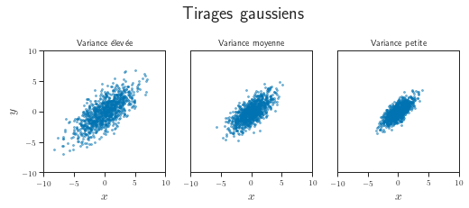
def plot_Gaussian2d_with_sample(theta=60, sig1=4, sig2=2, n_samples=1000):
radian = theta / 180.0 * np.pi # convertion en radian
sig = angle_scalar_to_covmat(radian, sig1, sig2)
rv = multivariate_normal([mean_1[0], mean_1[1]], sig)
pos = np.empty(Xg.shape + (2,))
pos[:, :, 0] = Xg
pos[:, :, 1] = Yg
Z2_ter = rv.pdf(pos)
fig1 = plt.figure(figsize=(12, 12))
# Densités gaussiennes (bidimensionnelles)
ax1 = fig1.add_subplot(221, projection='3d')
ax1.plot_surface(Xg, Yg, Z2_ter, cmap='Oranges', rstride=3, cstride=3,
alpha=0.95, lw=0.5, edgecolors='k')
ax1.set_zlim(0, 0.06)
ax1.set_xticks(np.arange(-xrange, xrange+1, 5))
ax1.set_yticks(np.arange(-xrange, xrange+1, 5))
ax1.set_xlabel(r'$x$', **axis_font)
ax1.set_ylabel(r'$y$', **axis_font)
# Lignes de niveau de gaussiennes
ax2 = fig1.add_subplot(224)
ax2.set_xticks(np.arange(-xrange, xrange+1, 5))
ax2.set_yticks(np.arange(-xrange, xrange+1, 5))
ax2.contourf(xx, yy, Z2_ter, levels=10, cmap='Oranges')
ax2.contour(xx, yy, Z2_ter, levels=10, linewidths=0.5, colors=['k'])
ax2.set_xlabel(r'$x$', **axis_font)
ax2.set_ylabel(r'$y$', **axis_font)
ax2.set_title('Lignes de niveau de la densité', **title_font)
ax2.set_aspect('equal')
# Tirages gaussiens
ax3 = fig1.add_subplot(223)
X = np.random.multivariate_normal([0, 0], sig, n_samples)
ax3.scatter(X[:, 0], X[:, 1], s=4, alpha=0.5)
ax3.set_aspect('equal')
ax3.set_xlim(-xrange, xrange)
ax3.set_ylim(-xrange, xrange)
ax3.set_xlabel(r'$x$', **axis_font)
ax3.set_ylabel(r'$y$', **axis_font)
ax3.set_title('Tirages gaussiens', **title_font)interact(plot_Gaussian2d_with_sample, theta=(0, 360, 10),
sig1=(0.5, 5, 0.5), sig2=(0.5, 5, 0.5), n_samples=(10, 2000, 10));QQ-plots
import statsmodels.api as sm
fig = sm.qqplot(df_babies['wt'], norm, c='k', fillstyle='none')
plt.ylabel("Poids à la naissance (kg)", **axis_font)
plt.xlabel("Quantiles de la loi normale", **axis_font)
my_saving_display(fig, dirname, "qqplot", imageformat, saving=saving)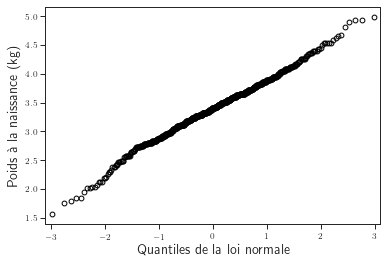
left = -1.8 # x coordinate for text insert
n_samples = 1000
fig = plt.figure()
fig.set_size_inches(10, 8)
ax = fig.add_subplot(2, 2, 1)
sm.graphics.qqplot(np.random.randn(n_samples), fillstyle='none', c='k', ax=ax)
top = ax.get_ylim()[1] * 0.75
ax.set_ylabel("Tirages gaussiens", **axis_font)
ax.set_xlabel("Quantiles théoriques", **axis_font)
coin = (2 * np.random.rand(n_samples) - 1) > 0.
ax = fig.add_subplot(2, 2, 2)
sm.graphics.qqplot(coin * np.random.randn(n_samples),
fillstyle='none', c='k', ax=ax)
top = ax.get_ylim()[1] * 0.75
ax.set_ylabel("Tirages bi-modaux", **axis_font)
ax.set_xlabel("Quantiles théoriques", **axis_font)
ax = fig.add_subplot(2, 2, 3)
sm.graphics.qqplot(np.random.standard_cauchy(
n_samples), fillstyle='none', c='k', ax=ax)
ax.set_xlim(-2, 2)
top = ax.get_ylim()[1] * 0.75
ax.set_ylabel("Tirages de Cauchy", **axis_font)
ax.set_xlabel("Quantiles théoriques", **axis_font)
ax = fig.add_subplot(2, 2, 4)
sm.graphics.qqplot(np.random.gumbel(0, 1, n_samples),
c='k', fillstyle='none', ax=ax)
ax.set_xlim(-2, 2)
top = ax.get_ylim()[1] * 0.75
ax.set_ylabel("Tirages de Gumbel", **axis_font)
ax.set_xlabel("Quantiles théoriques", **axis_font)
plt.tight_layout()
my_saving_display(fig, dirname, "qqplots", imageformat, saving=saving)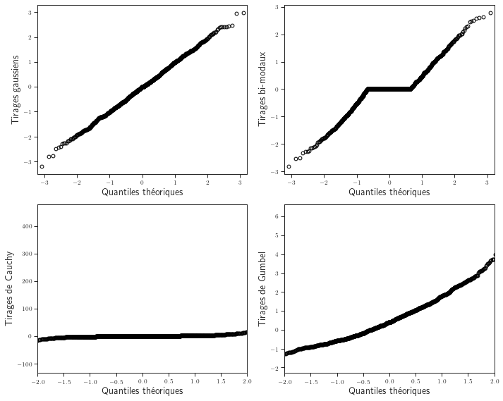